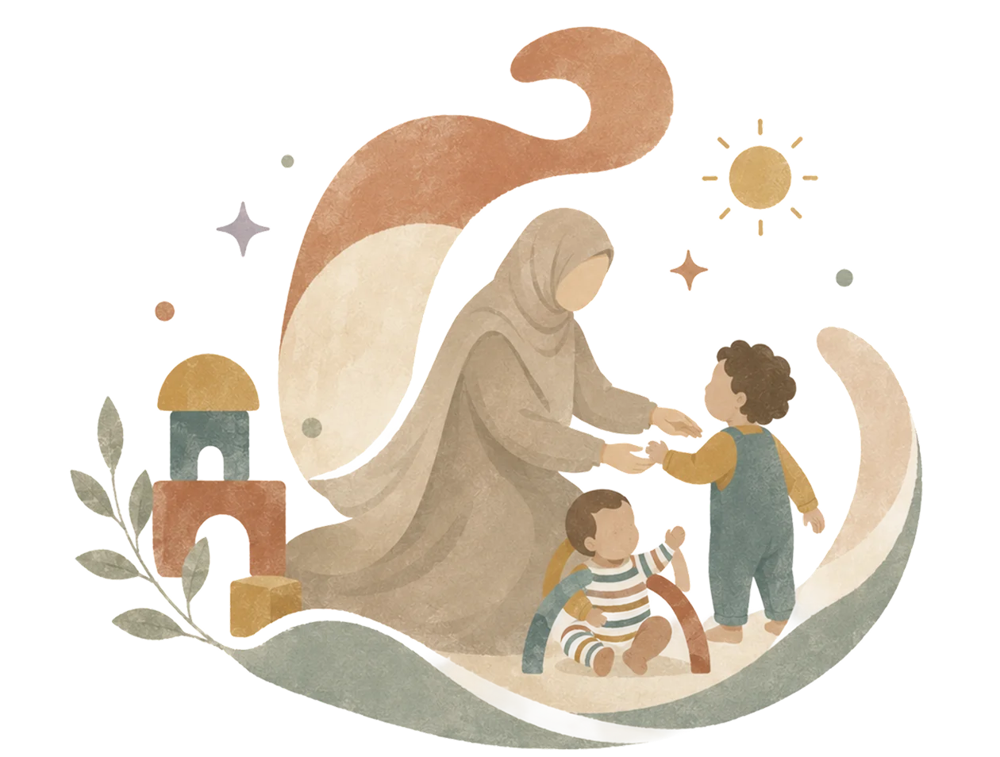
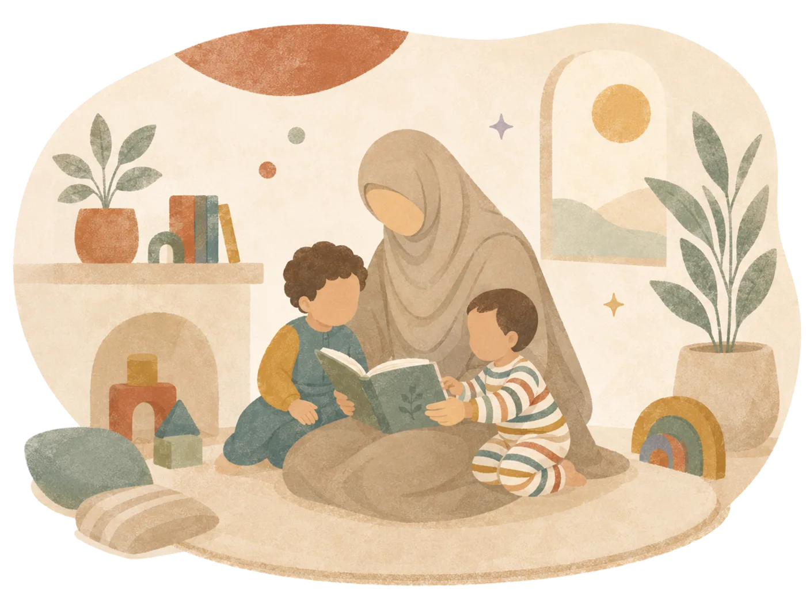
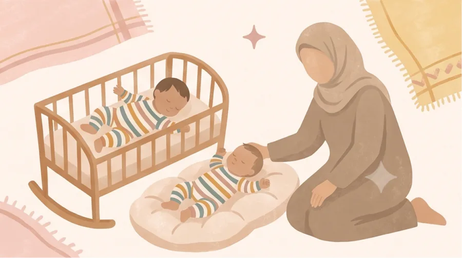
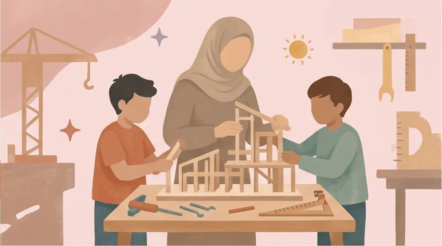
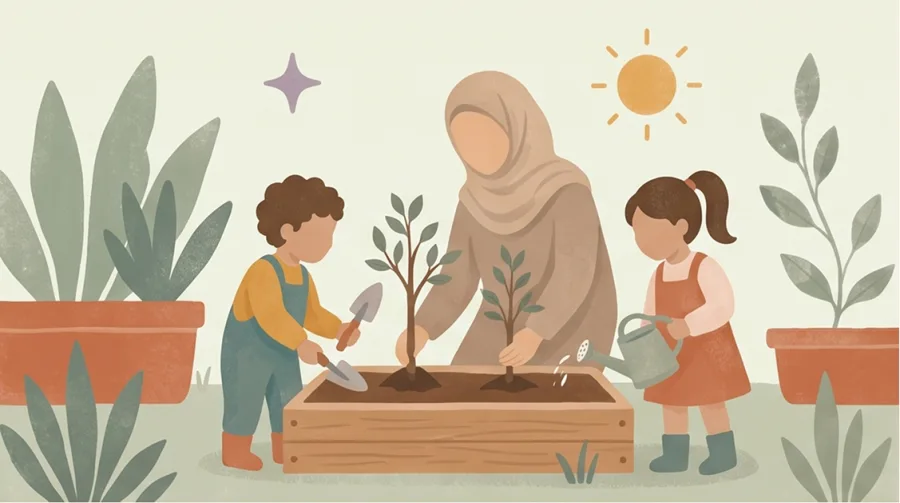
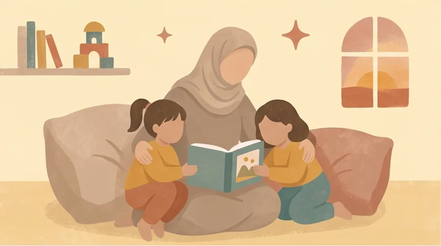

Het ritme van thuis blijft
Als moeder van twee weet ik hoe belangrijk veiligheid, herkenning en vaste gewoontes zijn.

Je kind volgt het ritme van thuis en jij weet tijdens en na de oppas hoe het gaat.
Als moeder van twee weet ik hoe belangrijk veiligheid, herkenning en vaste gewoontes zijn.
Ik maak een groepsapp met beide ouders en deel daarin tijdens en na de oppas een korte update.
Ik denk vooruit met eten, spel en bedtijd en sluit aan bij wat voor jullie thuis werkt.
“Na een korte online kennismaking weet je wie er thuis bij je kind is en wat er is afgesproken.”
Stuur datum, tijd, leeftijd, locatie en wat je kind nodig heeft via WhatsApp.
Via een korte video- of belafspraak voel je of het bij jullie past.
We bespreken ritme, eten, slaap en de afspraken rondom je kind.
Tijd, tarief, betaling en praktische afspraken worden schriftelijk bevestigd.
Aandacht voor jouw gezin
Je kind krijgt aandacht die past bij de leeftijd, het karakter en jullie gewoontes. Ik ben Chaima, 25 jaar, geboren en getogen in Amsterdam en moeder van twee jonge kinderen.

Wat mijn ervaring jullie brengtWat je thuis merkt
Geen kind heeft dezelfde aanpak nodig. Dankzij mijn pedagogische opleiding en ervaring bij CompaNanny, kinderdagverblijven, voorscholen en BSO's sluit ik snel aan bij kinderen van 0 tot 12 jaar.
Ook wanneer een kind extra begeleiding nodig heeft, kijk ik eerst naar wat wél werkt. Als jeugdbegeleider in een gespecialiseerd dagcentrum begeleidde ik kinderen met onder andere het syndroom van Down, autisme en taalontwikkelingsstoornissen. Die ervaring leerde mij snel zien wat ieder kind nodig heeft en mijn begeleiding daarop aan te passen.
Voor jullie betekent kleinschalige oppas aan huis dat er ruimte is voor persoonlijke aandacht. Of je nu overdag een paar uur ondersteuning nodig hebt of 's avonds met een gerust gevoel uit wilt: ik sluit aan bij jullie gezin en het ritme dat al vertrouwd is.
Je weet bij mij waar je aan toe bent. Ik communiceer open, kom afspraken na en vertel tijdens en na de oppas rustig hoe het gaat. Mijn opleiding, werkervaring en moederschap vormen daarvoor de basis.
Je kind krijgt de ruimte om te spelen, te leren en zichzelf te zijn.
Afspraken, updates en de overdracht blijven helder voor jullie allebei.
Waar nodig help ik met taken rondom de kinderen en kook ik graag als dat gewenst is.
“Jullie ritme blijft het uitgangspunt, van spelen tot slapen.”

Ik volg jullie bedritueel met pyjama, een boekje en een korte update.

Spel, zorg en begeleiding sluiten aan bij de leeftijd van je kind.

Lezen, tekenen en bouwen op een manier die past bij je kind.

Ik respecteer jullie waarden, taal, privacy en opvoedstijl.
“Chaima is een hele lieve en kundige oppas. De kinderen zijn dol op haar vrolijke en positieve benadering. Je merkt dat ze veel ervaring heeft met verschillende leeftijden en weet wat kinderen nodig hebben. Ik laat ze met veel vertrouwen bij haar achter.”
Chantal · ouder van kinderen van 4 en 2 jaar“Echt een topper. Ze doet leuke dingen met de kinderen, deelt uit zichzelf updates en had zelfs al voorbereidingen voor het avondeten gedaan.”
13 juli 2026 · kinderen van 1,5 en 3 jaar“Superlief met de kinderen. Heel veel ervaring en sterk in communicatie.”
12 juli 2026 · kinderen van 5 maanden en 3 jaar“Alles was heel goed. Chaima was heel lief met onze dochter en deed zelfs de was zonder dat we dit hadden gevraagd.”
10 juli 2026 · kind van 1 jaar“Heel fijn en ervaren met kleine baby's. Ze was erg behulpzaam en hielp ook rondom het huis.”
18 juni 2026 · kind van 5 maanden“Fijne oppas. Onze dochter vond het gezellig.”
13 juni 2026 · kind van 6 jaar“Onze kinderen vonden het heel leuk met Chaima. Ze hielp zelfs uit zichzelf mee in huis. We raden haar graag aan.”
30 juni 2026 · kinderen van 2 en 6 jaar“Ons zoontje was direct op zijn gemak. Ze hebben samen gegeten, gespeeld, verhaaltjes gelezen en de bedtijd ging heel fijn.”
18 november 2023 · kind van 7 jaar“Chaima is een ontzettend lieve, betrouwbare en toegewijde oppas. Ook wanneer het hectisch is met drie jonge kinderen blijft ze geduldig en houdt ze overzicht. Ze is assertief, ziet wat er nodig is en helpt waar passend mee, bijvoorbeeld met eten maken of opruimen. Ik kan haar aan iedereen aanbevelen. Als ik nog in Nederland woonde, zou ik haar heel vaak vragen.”
Desiree · kinderen van 4 jaar, 2 jaar en 3 maanden“Chaima heb ik als een heel warm en betrokken persoon ervaren. Ze heeft veel ervaring, is flexibel en heeft heel vaak op mijn twee jongens gepast, al vanaf dat ze baby waren. Ze zijn dol op haar en ik liet ze altijd met een gerust hart bij haar achter. Nu ze op school zitten, hebben we minder vaak oppas nodig, maar ik beveel haar van harte aan en zou mijn kinderen altijd aan haar toevertrouwen.”
Yazmin · ouder van twee jongens · vanaf 8 maanden en 3,5 jaarZodat je rustig kunt bepalen of de oppas bij jullie past.
Mijn basis is Amsterdam. Afhankelijk van datum, tijd en reistijd kom ik ook naar Haarlem, Hoofddorp, Zaandam en Almere.
Ja, zolang het om taken rondom de kinderen gaat. Denk aan eten klaarmaken, speelgoed opruimen of de kindwas; koken kan ook in overleg.
Op afspraak is mijn huidige tarief €17 per uur. Voor een last-minute aanvraag is mijn huidige tarief €18 per uur.
We spreken kort via video of telefoon. Zo kun je vragen stellen, bespreken we jullie ritme en weet je vooraf wie er bij je kind thuis is.
Vertel me wanneer en waar je oppas zoekt. Ik laat je snel weten of ik beschikbaar ben en denk graag met je mee.